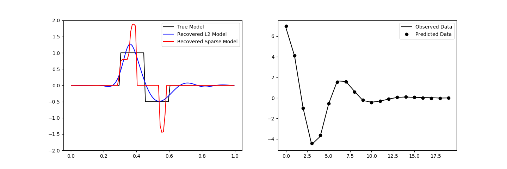
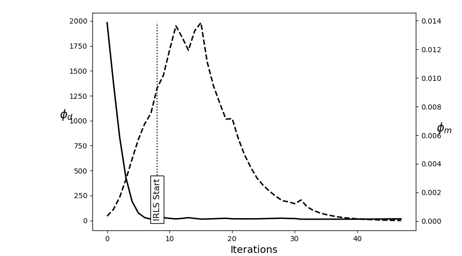

Note
Click here to download the full example code
Sparse Inversion with Iteratively Re-Weighted Least-Squares¶
Least-squares inversion produces smooth models which may not be an accurate representation of the true model. Here we demonstrate the basics of inverting for sparse and/or blocky models. Here, we used the iteratively reweighted least-squares approach. For this tutorial, we focus on the following:
Defining the forward problem
Defining the inverse problem (data misfit, regularization, optimization)
Defining the paramters for the IRLS algorithm
Specifying directives for the inversion
Recovering a set of model parameters which explains the observations
from __future__ import print_function
import numpy as np
import matplotlib.pyplot as plt
from discretize import TensorMesh
from SimPEG.simulation import LinearSimulation
from SimPEG.data import Data
from SimPEG import (
simulation,
maps,
data_misfit,
directives,
optimization,
regularization,
inverse_problem,
inversion,
)
# sphinx_gallery_thumbnail_number = 3
Defining the Model and Mapping¶
Here we generate a synthetic model and a mappig which goes from the model space to the row space of our linear operator.
nParam = 100 # Number of model paramters
# A 1D mesh is used to define the row-space of the linear operator.
mesh = TensorMesh([nParam])
# Creating the true model
true_model = np.zeros(mesh.nC)
true_model[mesh.vectorCCx > 0.3] = 1.0
true_model[mesh.vectorCCx > 0.45] = -0.5
true_model[mesh.vectorCCx > 0.6] = 0
# Mapping from the model space to the row space of the linear operator
model_map = maps.IdentityMap(mesh)
# Plotting the true model
fig = plt.figure(figsize=(8, 5))
ax = fig.add_subplot(111)
ax.plot(mesh.vectorCCx, true_model, "b-")
ax.set_ylim([-2, 2])

Out:
/usr/share/miniconda/envs/deploy/lib/python3.7/site-packages/discretize/utils/code_utils.py:129: FutureWarning: TensorMesh.vectorCCx has been deprecated, please use TensorMesh.cell_centers_x. It will be removed in version 1.0.0 of discretize.
warnings.warn(message, FutureWarning)
(-2.0, 2.0)
Defining the Linear Operator¶
Here we define the linear operator with dimensions (nData, nParam). In practive, you may have a problem-specific linear operator which you would like to construct or load here.
# Number of data observations (rows)
nData = 20
# Create the linear operator for the tutorial. The columns of the linear operator
# represents a set of decaying and oscillating functions.
jk = np.linspace(1.0, 60.0, nData)
p = -0.25
q = 0.25
def g(k):
return np.exp(p * jk[k] * mesh.vectorCCx) * np.cos(
np.pi * q * jk[k] * mesh.vectorCCx
)
G = np.empty((nData, nParam))
for i in range(nData):
G[i, :] = g(i)
# Plot the columns of G
fig = plt.figure(figsize=(8, 5))
ax = fig.add_subplot(111)
for i in range(G.shape[0]):
ax.plot(G[i, :])
ax.set_title("Columns of matrix G")
Out:
/usr/share/miniconda/envs/deploy/lib/python3.7/site-packages/discretize/utils/code_utils.py:129: FutureWarning: TensorMesh.vectorCCx has been deprecated, please use TensorMesh.cell_centers_x. It will be removed in version 1.0.0 of discretize.
warnings.warn(message, FutureWarning)
Text(0.5, 1.0, 'Columns of matrix G')
Defining the Simulation¶
The simulation defines the relationship between the model parameters and predicted data.
sim = simulation.LinearSimulation(mesh, G=G, model_map=model_map)
Out:
/home/vsts/work/1/s/SimPEG/simulation.py:531: UserWarning: G has not been implemented for the simulation
warnings.warn("G has not been implemented for the simulation")
Predict Synthetic Data¶
Here, we use the true model to create synthetic data which we will subsequently invert.
# Standard deviation of Gaussian noise being added
std = 0.02
np.random.seed(1)
# Create a SimPEG data object
data_obj = sim.make_synthetic_data(true_model, noise_floor=std, add_noise=True)
Define the Inverse Problem¶
The inverse problem is defined by 3 things:
Data Misfit: a measure of how well our recovered model explains the field data
Regularization: constraints placed on the recovered model and a priori information
Optimization: the numerical approach used to solve the inverse problem
# Define the data misfit. Here the data misfit is the L2 norm of the weighted
# residual between the observed data and the data predicted for a given model.
# Within the data misfit, the residual between predicted and observed data are
# normalized by the data's standard deviation.
dmis = data_misfit.L2DataMisfit(simulation=sim, data=data_obj)
# Define the regularization (model objective function). Here, 'p' defines the
# the norm of the smallness term and 'q' defines the norm of the smoothness
# term.
reg = regularization.Sparse(mesh, mapping=model_map)
reg.mref = np.zeros(nParam)
p = 0.
q = 0.
reg.norms = np.c_[p, q]
# Define how the optimization problem is solved.
opt = optimization.ProjectedGNCG(
maxIter=100, lower=-2.0, upper=2.0, maxIterLS=20, maxIterCG=30, tolCG=1e-4
)
# Here we define the inverse problem that is to be solved
inv_prob = inverse_problem.BaseInvProblem(dmis, reg, opt)
Define Inversion Directives¶
Here we define any directiveas that are carried out during the inversion. This includes the cooling schedule for the trade-off parameter (beta), stopping criteria for the inversion and saving inversion results at each iteration.
# Add sensitivity weights but don't update at each beta
sensitivity_weights = directives.UpdateSensitivityWeights(everyIter=False)
# Reach target misfit for L2 solution, then use IRLS until model stops changing.
IRLS = directives.Update_IRLS(max_irls_iterations=40, minGNiter=1, f_min_change=1e-4)
# Defining a starting value for the trade-off parameter (beta) between the data
# misfit and the regularization.
starting_beta = directives.BetaEstimate_ByEig(beta0_ratio=1e0)
# Update the preconditionner
update_Jacobi = directives.UpdatePreconditioner()
# Save output at each iteration
saveDict = directives.SaveOutputEveryIteration(save_txt=False)
# Define the directives as a list
directives_list = [sensitivity_weights, IRLS, starting_beta, update_Jacobi, saveDict]
Setting a Starting Model and Running the Inversion¶
To define the inversion object, we need to define the inversion problem and the set of directives. We can then run the inversion.
# Here we combine the inverse problem and the set of directives
inv = inversion.BaseInversion(inv_prob, directives_list)
# Starting model
starting_model = 1e-4 * np.ones(nParam)
# Run inversion
recovered_model = inv.run(starting_model)
Out:
SimPEG.InvProblem is setting bfgsH0 to the inverse of the eval2Deriv.
***Done using same Solver and solverOpts as the problem***
/usr/share/miniconda/envs/deploy/lib/python3.7/site-packages/discretize/utils/code_utils.py:129: FutureWarning: TensorMesh.vol has been deprecated, please use TensorMesh.cell_volumes. It will be removed in version 1.0.0 of discretize.
warnings.warn(message, FutureWarning)
/usr/share/miniconda/envs/deploy/lib/python3.7/site-packages/discretize/utils/code_utils.py:129: FutureWarning: TensorMesh._cellGradxStencil has been deprecated, please use TensorMesh.stencil_cell_gradient_x. It will be removed in version 1.0.0 of discretize.
warnings.warn(message, FutureWarning)
model has any nan: 0
=============================== Projected GNCG ===============================
# beta phi_d phi_m f |proj(x-g)-x| LS Comment
-----------------------------------------------------------------------------
x0 has any nan: 0
0 3.56e+03 1.33e+03 4.75e-08 1.33e+03 1.98e+01 0
1 1.78e+03 2.90e+02 7.70e-02 4.27e+02 1.53e+01 0
2 8.90e+02 1.50e+02 1.32e-01 2.68e+02 1.38e+01 0 Skip BFGS
3 4.45e+02 6.83e+01 1.96e-01 1.56e+02 1.17e+01 0 Skip BFGS
4 2.22e+02 2.96e+01 2.56e-01 8.65e+01 9.29e+00 0 Skip BFGS
5 1.11e+02 1.42e+01 3.03e-01 4.79e+01 7.81e+00 0 Skip BFGS
Reached starting chifact with l2-norm regularization: Start IRLS steps...
eps_p: 1.2732052273799406 eps_q: 1.2732052273799406
6 5.56e+01 8.85e+00 4.58e-01 3.43e+01 3.01e+00 0 Skip BFGS
7 8.96e+01 8.18e+00 5.26e-01 5.53e+01 1.29e+01 0
8 7.24e+01 1.16e+01 5.24e-01 4.95e+01 1.81e+00 0
9 5.79e+01 1.17e+01 5.57e-01 4.40e+01 1.41e+00 0 Skip BFGS
10 4.67e+01 1.16e+01 5.78e-01 3.86e+01 1.71e+00 0 Skip BFGS
11 3.82e+01 1.13e+01 5.84e-01 3.36e+01 2.14e+00 0 Skip BFGS
12 3.82e+01 1.07e+01 5.75e-01 3.27e+01 2.42e+00 0
13 3.82e+01 1.09e+01 5.41e-01 3.16e+01 2.81e+00 0
14 3.17e+01 1.10e+01 4.98e-01 2.68e+01 3.46e+00 0
15 3.17e+01 1.04e+01 4.69e-01 2.52e+01 3.34e+00 0
16 3.17e+01 1.05e+01 4.39e-01 2.44e+01 3.14e+00 0
17 3.17e+01 1.08e+01 4.04e-01 2.35e+01 4.57e+00 0 Skip BFGS
18 3.17e+01 1.09e+01 3.65e-01 2.24e+01 5.60e+00 0 Skip BFGS
19 3.17e+01 1.07e+01 3.26e-01 2.11e+01 3.92e+00 0
20 3.17e+01 1.05e+01 2.84e-01 1.95e+01 4.49e+00 0
21 3.17e+01 1.03e+01 2.43e-01 1.80e+01 4.79e+00 0
22 3.17e+01 1.01e+01 2.07e-01 1.66e+01 5.28e+00 0
23 3.17e+01 9.87e+00 1.74e-01 1.54e+01 4.99e+00 0
24 3.17e+01 9.71e+00 1.52e-01 1.45e+01 4.72e+00 0
25 3.17e+01 9.52e+00 1.32e-01 1.37e+01 5.30e+00 0
26 3.17e+01 9.29e+00 1.17e-01 1.30e+01 5.66e+00 0
27 3.17e+01 9.11e+00 1.04e-01 1.24e+01 6.03e+00 0 Skip BFGS
28 4.96e+01 8.82e+00 9.15e-02 1.34e+01 1.21e+01 0
29 4.96e+01 9.17e+00 7.23e-02 1.28e+01 9.43e+00 0
30 7.77e+01 8.85e+00 5.59e-02 1.32e+01 1.27e+01 0
31 1.21e+02 8.99e+00 4.19e-02 1.41e+01 1.56e+01 0
32 1.21e+02 9.44e+00 3.11e-02 1.32e+01 1.11e+01 0
33 1.21e+02 9.55e+00 2.56e-02 1.26e+01 9.99e+00 0 Skip BFGS
34 1.21e+02 9.64e+00 2.14e-02 1.22e+01 9.50e+00 0 Skip BFGS
35 1.21e+02 9.73e+00 1.80e-02 1.19e+01 9.22e+00 0 Skip BFGS
36 1.21e+02 9.81e+00 1.52e-02 1.17e+01 9.07e+00 0 Skip BFGS
37 1.21e+02 9.90e+00 1.29e-02 1.15e+01 9.00e+00 0 Skip BFGS
38 1.21e+02 9.98e+00 1.09e-02 1.13e+01 8.98e+00 0 Skip BFGS
39 1.21e+02 1.01e+01 9.26e-03 1.12e+01 8.98e+00 0 Skip BFGS
40 1.21e+02 1.01e+01 7.86e-03 1.11e+01 8.99e+00 0 Skip BFGS
41 1.21e+02 1.02e+01 6.66e-03 1.10e+01 8.99e+00 0 Skip BFGS
42 1.21e+02 1.02e+01 5.65e-03 1.09e+01 8.98e+00 0 Skip BFGS
43 1.21e+02 1.03e+01 4.79e-03 1.09e+01 8.97e+00 0 Skip BFGS
44 1.21e+02 1.03e+01 4.06e-03 1.08e+01 8.95e+00 0 Skip BFGS
45 1.21e+02 1.04e+01 3.45e-03 1.08e+01 8.97e+00 0
Reach maximum number of IRLS cycles: 40
------------------------- STOP! -------------------------
1 : |fc-fOld| = 0.0000e+00 <= tolF*(1+|f0|) = 1.3271e+02
1 : |xc-x_last| = 1.6285e-03 <= tolX*(1+|x0|) = 1.0010e-01
0 : |proj(x-g)-x| = 8.9726e+00 <= tolG = 1.0000e-01
0 : |proj(x-g)-x| = 8.9726e+00 <= 1e3*eps = 1.0000e-02
0 : maxIter = 100 <= iter = 46
------------------------- DONE! -------------------------
Plotting Results¶
fig, ax = plt.subplots(1, 2, figsize=(12 * 1.2, 4 * 1.2))
# True versus recovered model
ax[0].plot(mesh.vectorCCx, true_model, "k-")
ax[0].plot(mesh.vectorCCx, inv_prob.l2model, "b-")
ax[0].plot(mesh.vectorCCx, recovered_model, "r-")
ax[0].legend(("True Model", "Recovered L2 Model", "Recovered Sparse Model"))
ax[0].set_ylim([-2, 2])
# Observed versus predicted data
ax[1].plot(data_obj.dobs, "k-")
ax[1].plot(inv_prob.dpred, "ko")
ax[1].legend(("Observed Data", "Predicted Data"))
# Plot convergence
fig = plt.figure(figsize=(9, 5))
ax = fig.add_axes([0.2, 0.1, 0.7, 0.85])
ax.plot(saveDict.phi_d, "k", lw=2)
twin = ax.twinx()
twin.plot(saveDict.phi_m, "k--", lw=2)
ax.plot(np.r_[IRLS.iterStart, IRLS.iterStart], np.r_[0, np.max(saveDict.phi_d)], "k:")
ax.text(
IRLS.iterStart,
0.0,
"IRLS Start",
va="bottom",
ha="center",
rotation="vertical",
size=12,
bbox={"facecolor": "white"},
)
ax.set_ylabel("$\phi_d$", size=16, rotation=0)
ax.set_xlabel("Iterations", size=14)
twin.set_ylabel("$\phi_m$", size=16, rotation=0)
- 
- 
Out:
/usr/share/miniconda/envs/deploy/lib/python3.7/site-packages/discretize/utils/code_utils.py:129: FutureWarning: TensorMesh.vectorCCx has been deprecated, please use TensorMesh.cell_centers_x. It will be removed in version 1.0.0 of discretize.
warnings.warn(message, FutureWarning)
/usr/share/miniconda/envs/deploy/lib/python3.7/site-packages/discretize/utils/code_utils.py:129: FutureWarning: TensorMesh.vectorCCx has been deprecated, please use TensorMesh.cell_centers_x. It will be removed in version 1.0.0 of discretize.
warnings.warn(message, FutureWarning)
/usr/share/miniconda/envs/deploy/lib/python3.7/site-packages/discretize/utils/code_utils.py:129: FutureWarning: TensorMesh.vectorCCx has been deprecated, please use TensorMesh.cell_centers_x. It will be removed in version 1.0.0 of discretize.
warnings.warn(message, FutureWarning)
Text(847.4027777777777, 0.5, '$\\phi_m$')
Total running time of the script: ( 0 minutes 28.146 seconds)
Estimated memory usage: 9 MB